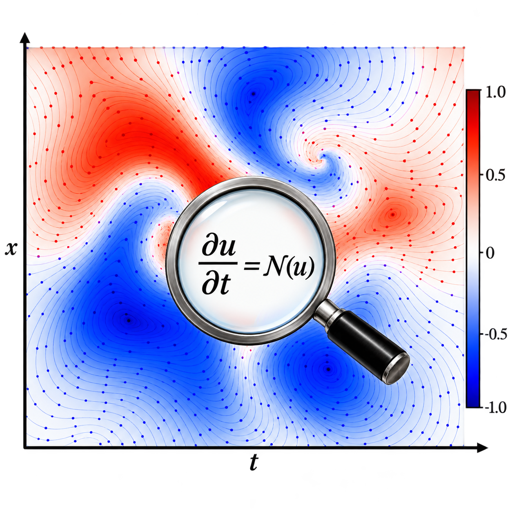

AI4Science | Agentic Systems | Scientific Discovery | Engineering Design
Computational Science uses the mathematical models and their computer based simulations to understand and engineer physical systems such as a car, an aircraft engine, a high rise building, etc. These modern physical systems as of today are conceived, analyzed, refined and certified through a computational pipeline, trying to close the gap between a simulation and actual physical behavior. To accurately model complex physical systems, computational science can be organized into three coupled domains that mirror the human scientific method itself.
Discovery

Observational data from a complex physical system is used to infer its unknown governing mathematical model, answering the question "what equations govern this system?".
Observational data from a complex physical system is used to infer its unknown governing mathematical model, answering the question "what equations govern this system?".
Consists of the governing equations subject to initial and boundary conditions and other forcing parameters simulated by a solver to compute the system behavior answering "what does the model predict?".
Engineering a physical system to satisfy predefined objectives and constraints by varying geometries, materials, operating parameters, etc to achieve the target objectives for example performance, safety, cost, etc, answering "what configuration achieves the goal?".
Challenges
Manual hypothesis generation and validation
Researchers must formulate candidate explanations, choose suitable tests, and interpret the results. Exploring a large space of possible models makes this process demanding and slow.
Continuous expert monitoring and intervention
Computational workflows often require experts to diagnose failures, judge reliability, and decide when to change methods. These decisions draw on physical knowledge and evidence spread across equations, numerical data, and visualizations.
Costly trial and error
Testing candidate models or designs can require repeated, expensive simulations. Without using previous results to guide the next choice, substantial effort can be spent on unpromising candidates.
Multimodal Reasoning
Agentic AI can support the scientific cycle of observing, deciding, evaluating, and adapting by combining multimodal evidence with knowledge across disciplines.
Observe
Examine numerical data, equations, images, and simulation outputs to identify patterns, anomalies, and gaps in the available evidence.
Decide
Choose the next hypothesis, computational method, or design candidate based on the task and the available evidence.
Evaluate
Assess whether a result is physically consistent, sufficiently accurate, and relevant to the objective.
Adapt
Revise the hypothesis, method, or design when new evidence reveals a limitation or a more promising direction.
Scientific Knowledge
Use physical laws, domain expertise, and constraints to guide choices and rule out implausible options.
Computational Evidence
Interpret simulation outputs, numerical diagnostics, plots, and observed data together to identify agreement, uncertainty, and failure.
Feedback
Use validation results and discrepancies to inform the next iteration, rather than repeating the same unsuccessful choices.
Governing Equation Discovery
I develop agentic AI frameworks that infer the governing laws of physical systems from observational data. My recent work, MAGE, draws inspiration from the workflow of human scientists to discover governing partial differential equations. It coordinates role specialized agents for data visualization, physical interpretation, hypothesis generation, and candidate validation, connecting multimodal observations with mathematical explanations.
The MAGE workflow connects data visualization and physical interpretation with hypothesis generation and validation to discover governing PDEs.
Analysis Through Simulation
I develop agentic hybrid solvers that combine the speed of data driven models such as PINNs, Neural Operators, and foundation models, with the physical grounding of classical numerical simulation. These frameworks aim to assess solution reliability and adaptively select or coordinate learned and numerical solvers as a simulation evolves. The goal is to reduce computational cost while maintaining accuracy and physical consistency, particularly when learned models encounter conditions beyond their training data.
Engineering Design
I develop agentic frameworks for engineering design that connect governing equation discovery with simulation based analysis. These frameworks aim to propose, evaluate, and refine designs by coordinating models and evidence across interacting physical disciplines. By adapting geometries, materials, and operating conditions, my goal is to address coupled multidisciplinary objectives and constraints while navigating trade offs among performance, safety, and cost.